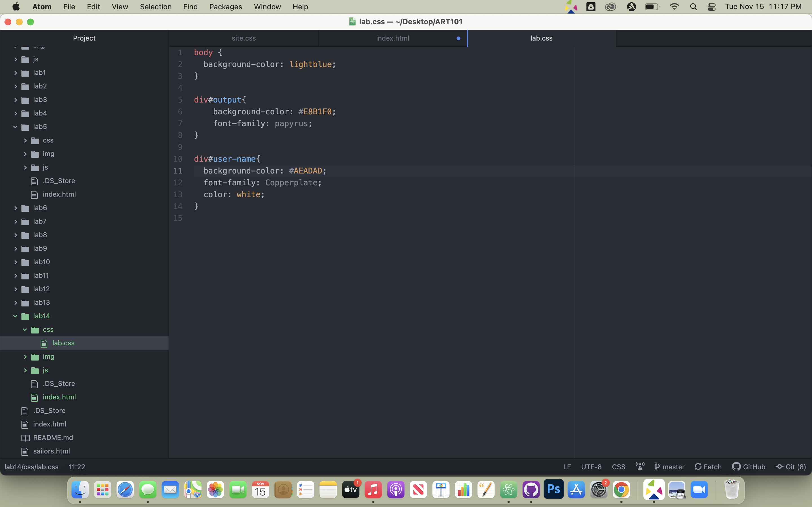
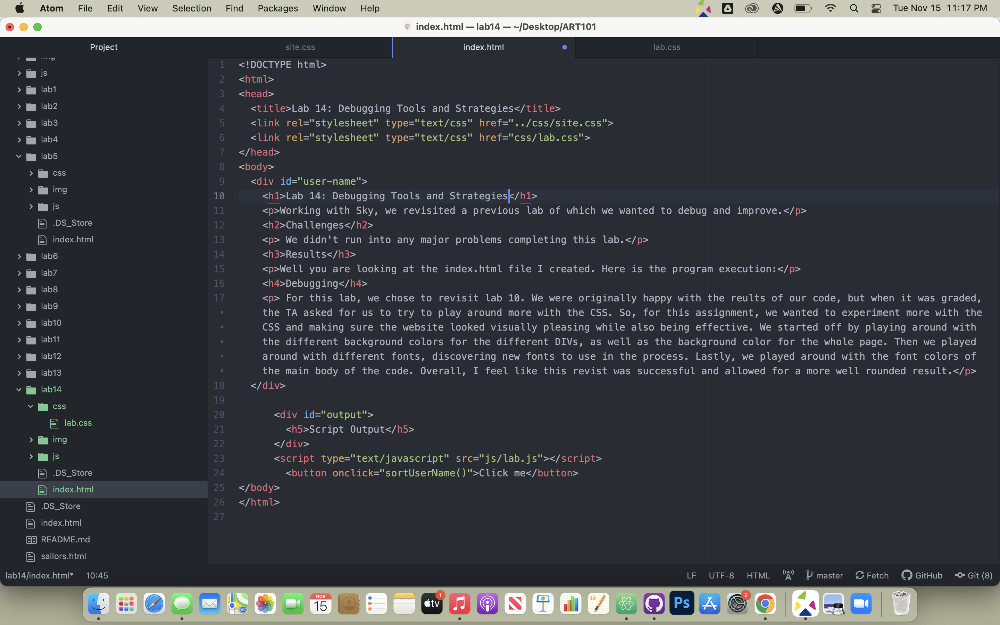
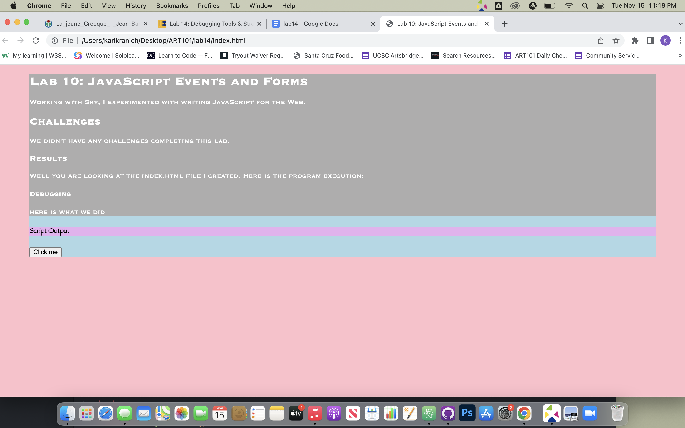
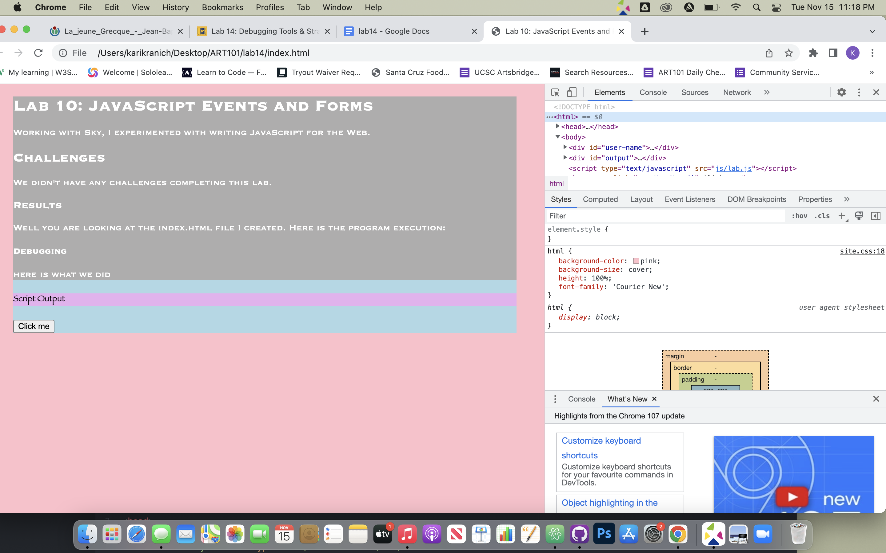

Working with Sky, we revisited a previous lab of which we wanted to debug and improve.
We didn't run into any major problems completing this lab.
Well you are looking at the index.html file I created. Here is the program execution:
For this lab, we chose to revisit lab 10. We were originally happy with the reults of our code, but when it was graded, the TA asked for us to try to play around more with the CSS. So, for this assignment, we wanted to experiment more with the CSS and making sure the website looked visually pleasing while also being effective. We started off by playing around with the different background colors for the different DIVs, as well as the background color for the whole page. Then we played around with different fonts, discovering new fonts to use in the process. Lastly, we played around with the font colors of the main body of the code. Overall, I feel like this revist was successful and allowed for a more well rounded result.
   